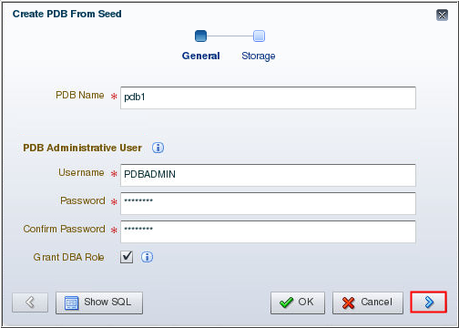
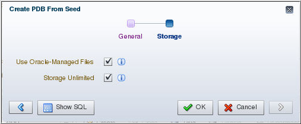
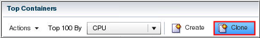
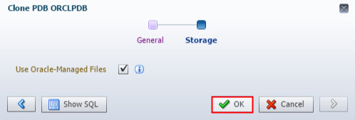
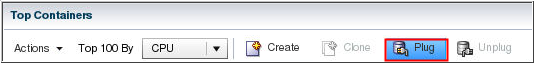

This 15-minute tutorial shows you how to provision pluggable
databases (PDBs) in a multitenant container database (CDB) using
Oracle Enterprise Manager Database Express (EM Express).
Select the Oracle Database release:
Background
You can provision PDBs by creating a new PDB within a CDB, by
cloning an existing PDB, and by plugging an unplugged PDB into a
CDB.
What Do You Need?
Oracle Database 18c19c
Create
a New PDB from the Seed
In EM Express, ensure that you are in the Containers page
for the ORCL CDB.
The Create PDB From Seed wizard appears. On the General page
of the wizard, supply values for these fields and click the
Next button:
PDB Name: In this example, the PDB Name is entered as
pdb1. You may enter a different name.
Username: Enter the name of the administrative user who
would manage the PDB you are creating.
Password: Enter the password for the administrative user.
Confirm Password: Reenter the password for the
administrative user.
Grant DBA Role: Enable this option to grant the DBA role
to the administrative user you are creating.

Description of the
illustration a3
On the Storage page, select the type of location where you
want to store the datafiles for the PDB. Since the ORCL
CDB is enabled with Oracle Managed Files, Use
Oracle-Managed Files is selected. Also, choose
whether or not to enable unlimited storage for the datafiles.
Click OK.
Description of the
illustration a4
Note: If the CDB has a current active resource plan, the
Resource Limits page appears. Supply values for these
fields, or keep the default values for the PDB you are
creating.
The PDB is created and opened in read write mode. The
Confirmation box appears and advises you that the PDB was
successfully created. Click OK.
Create
a PDB by Cloning a PDB in the Same CDB
In EM Express, ensure that you are in the Containers page
for the ORCL CDB.
In the Top Containers section of the Containers page, click
the PDB that you want to clone and then choose Clone.
In this example, orclpdb is being cloned.

Description of the
illustration b2
he Clone wizard appears. On the General page of the Clone
wizard, enter values for these fields and click Next:
PDB Name: Enter the name you want to use for the cloned
PDB.
Service Option: Enable this option so that the service
name is unique and not the same as the source PDB.
Source PDB Service: Specify the service name of the
source PDB.
Destination PDB Service: Specify the service name of the
new PDB that will be created by the clone operation.
Note: Since the source PDB is in read write mode, a hot
clone will be performed.
On the Storage page, accept the default location to store
the datafiles for the PDB and click OK.

Description of the
illustration b4
The PDB is created and opened in read write mode. The
Confirmation box appears and advises you that the PDB was
created successfully through cloning. Click OK.
Plug
in an Unplugged PDB
Before you plug in an unplugged PDB, you must have a PDB
that is unplugged. To unplug a PDB, follow the steps in the
next OBE "Remove PDBs Using EM Express."
In EM Express, ensure that you are in the Containers page
for the ORCL CDB.
In the Top Containers section of the Containers page, click
Plug. In this example,
you plug PDB2.

Description of the
illustration c3
On the General page of the Plug PDB wizard, supply values
for these fields and click the Next button:
Metadata File: Enter the full path to the metadata XML
file that was created when the PDB was unplugged.
Reuse PDB name from Metadata File: Select this option so
that the same name is used as the unplugged PDB when it is
plugged into the CDB.
Reuse source datafile location from Metadata File:
Select this option so that the same datafile location is
used as the unplugged PDB when it is plugged into the CDB.
 Provision
a PDB Using EM Express
Provision
a PDB Using EM Express  Before You Begin
Before You Begin Create
a New PDB from the Seed
Create
a New PDB from the Seed Create
a PDB by Cloning a PDB in the Same CDB
Create
a PDB by Cloning a PDB in the Same CDB Plug
in an Unplugged PDB
Plug
in an Unplugged PDB